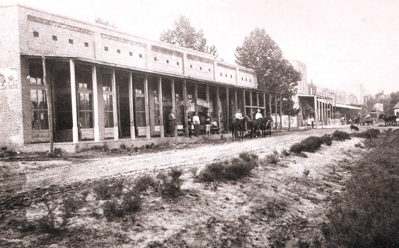
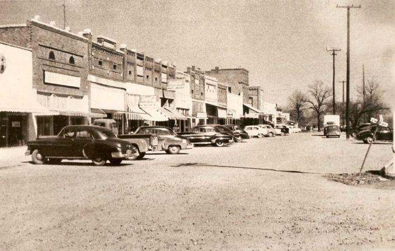

A narrative topic page compiled from council records, the Arkansas Leader, and the other sources listed at the bottom of the page. Resident discussion from Facebook groups is paraphrased into themes; no posts are quoted.
First Street: The Railroad Town the Tornado Took
The story
Cabot began as somebody else's bypass. A few miles northeast of the present city stood Austin — settled in the early 1820s, a stop on the Butterfield Overland Mail stage route, and by the Civil War a real town of about thirty residences, dry-goods stores, a grocery, a school, three doctors, a saddler, a tailor, three saloons, a hotel, a sawmill, a cotton gin, and a wool-carding factory. A large Confederate camp, Camp Nelson, sat nearby in 1862. When the Cairo & Fulton Railroad built through the area in 1872–73, its tracks passed about a mile southeast of Austin. Local tradition holds that a farmer refused to sell the railroad its right of way through his farm. Buildings in the old town were dismantled and rebuilt along the tracks at Austin Station, and the town that had expected the railroad began its long fade into "Old Austin." A second stop on the same line, a few miles southwest toward Little Rock, was a water and fuel stop. That stop became Cabot.
The first newspaper references to the Cabot stop appear in Little Rock papers in 1872, while the line was still being built, and a post office was established in 1873. The name most likely honors George Cabot Ward, a director of the Cairo & Fulton — a Massachusetts-born New York financier who sat on the board elected June 3, 1873, and again on the board of the consolidated St. Louis, Iron Mountain and Southern after the roads merged in May 1874. The neighboring town of Ward, less than six miles away, carries the other half of his name. An older tradition, recorded in a 1906 letter by Cabot school principal G. W. Newton from the recollection of longtime resident Richard A. Stovall, held that the town was named for the first engineer to work the local line. The documentary trail — two 1873–74 directors lists in the Arkansas Gazette, reconstructed by local historian Mike Polston in the Leader in 2020 — points to the director, and the Encyclopedia of Arkansas rates the Ward origin "likely," but the engineer story is the one the town told about itself for a century.

The settlement grew along the tracks, because the tracks were the reason for it. Professor G. W. Newton opened the first school in 1875. First Baptist Church was founded in 1876, and that year a statewide newspaper called the new town "a place of much promise," already ambitious to divide trade with its elder sister, Austin. About 1883, Dave and Jim Patton opened the first business, a general store. In 1885, Dr. G. W. Grandberry began publishing the town's first newspaper, the Guard. By 1889, the business district along the railroad included six general stores, two drugstores, a hotel kept by James Charles Boyd, James Adam's livery stable, and the Neely brothers' cotton gin; Drs. James Milton Park and Grandberry attended the town's health. A city plat was filed at the county courthouse on September 25, 1891, and Cabot incorporated on November 9, 1891. The 1900 census counted 294 people.
Cotton was the economy the railroad served. Wagons loaded with cotton in Cabot's streets around 1900 are among the oldest photographs of the town that survive. Across Lonoke County, brokers bid on the mule-drawn wagons hauling cotton to the depots at Cabot, Carlisle, England, and Lonoke, and in strawberry season the railroad later ran extra cars to carry berries to market from Cabot, Austin, and Ward. The Neely gin is the only Cabot gin the early record names; no source consulted for this page documents a cotton compress in Cabot. Farming broadened rather than changed: a creamery cooperative in 1919, a truck farmers' association in 1938, a dairy producers' association in the 1930s, and the trade days on which downtown businesses donated drawing prizes to pull farm families into town.
The town the railroad made took on the standard equipment of an Arkansas county town, on railroad time. The Bank of Cabot was founded in 1903 — it later became part of Centennial Bank. A brick schoolhouse known as Old Main rose in the 1910s (sources differ on 1912 and 1915; it was demolished in 1972). By the 1920s a city generator supplied electricity, but only from 6:00 p.m. to 10:00 p.m.; a telephone system arrived about the same time, and radio in 1920. City water was installed in 1933, replacing the downtown cistern. Over the town's first fifty years, the original wooden store buildings were replaced with brick ones — the streetscape that appears in the surviving photographs: a compact grid of storefronts facing the tracks along First Street and Main Street, with Second Street behind them.
Geography fixed that grid in place. First Street ran with the railroad and carried the highway: residents remember it as the original parent route of U.S. Highway 67 through town. Main Street ran east and west in two sections, divided at the crossing point where the civic core would later be rebuilt. Arkansas Highway 89 came down West Main. The depot — the Missouri Pacific's by the twentieth century, after the Iron Mountain had been folded into that system — stood on First Street between the tracks and what is now a hardware store, on ground later occupied by a fuel company. The depot appears in a 1967 photograph; no source consulted records when it was built or when it came down.
The highway era at first fed the town rather than starving it. During World War II, the Arkansas Ordnance Plant at Jacksonville employed more than 14,000 people at its peak, many of them Cabot residents commuting south; the town's population jumped from 741 in 1940 to 1,147 in 1950. Highway 67 was paved to Little Rock and four-laned by the 1960s, Little Rock Air Force Base activated in 1955 just down the road, and Cabot's growth bent toward the new highway and the base: 1,321 people in 1960, 2,903 in 1970. But the downtown core stayed the railroad town's core — turn-of-the-century storefronts along Main and Second, many of them outdated and rickety even by 1976, relieved by a handful of newer buildings: the Arkansas Savings and Loan, the Bank of Cabot, and a post office dedicated in 1973. The former Central Fire Station, which had housed City Hall in the 1950s, stood on Main Street. It is, give or take the survivors listed below, a fair description of the physical town on the morning of March 29, 1976 — and it is where this page stops, because that afternoon is another page's story.
Timeline
- - Early 1820s — Settlers, among them James Erwin (1822), establish the community that becomes Austin, a few miles northeast of present-day Cabot; the Butterfield Overland Mail route passes through.
- - 1848 — Isaac Dunaway and Colbert Moore build Austin's first store; a post office named Oakland follows in 1855.
- - 1858 — Austin is surveyed into blocks and named; by the Civil War it holds some thirty residences, stores, a hotel, three saloons, a cotton gin, and a wool-carding factory.
- - 1862 — Camp Nelson, a Confederate winter camp, is established nearby; disease kills roughly 1,500 soldiers buried there.
- - 1872 — Little Rock newspapers carry the first references to a Cabot stop on the building Cairo & Fulton Railroad.
- - 1873 — The railroad bypasses Austin, passing about a mile southeast of it; a water and fuel stop is built on the future Cabot site, and a post office is established. On June 3, George Cabot Ward is elected a Cairo & Fulton director in Little Rock.
- - May 1874 — The Cairo & Fulton consolidates with the St. Louis, Iron Mountain and Southern; Ward sits on the new board too.
- - 1875 — Professor G. W. Newton opens Cabot's first school.
- - 1876 — First Baptist Church is founded; a statewide paper calls the settlement "a place of much promise."
- - c. 1883 — Dave and Jim Patton open the first business, a general store.
- - 1885 — Dr. G. W. Grandberry begins the Guard, Cabot's first newspaper.
- - 1889 — The business district along the tracks holds six general stores, two drugstores, Boyd's hotel, Adam's livery stable, and the Neely brothers' cotton gin.
- - September 25, 1891 — The city plat is filed; on November 9, 1891, Cabot incorporates.
- - 1900 — Population 294.
- - 1903 — The Bank of Cabot is founded.
- - 1910s — The brick school known as Old Main is built (1912 or 1915, per differing sources); it stands until 1972.
- - 1919 — A creamery cooperative is organized; strawberries and truck farming join cotton in the farm economy.
- - 1920s — A city generator supplies electricity four hours a night; telephones and radio arrive; city water follows in 1933, replacing the downtown cistern.
- - 1938 — The truck farmers' association forms; trade days draw farm families downtown.
- - 1942–45 — The Arkansas Ordnance Plant at Jacksonville employs thousands of Cabot commuters; population rises from 741 (1940) to 1,147 (1950).
- - 1955 — Little Rock Air Force Base activates near Jacksonville; Highway 67 is paved and, by the 1960s, four-laned to Little Rock. Population reaches 2,903 by 1970.
- - 1967 — The Missouri Pacific depot on First Street is photographed, still standing.
- - 1973 — A new post office is dedicated, one of downtown's few modern buildings.
- - March 29, 1976 — The tornado. This page ends here; the story continues on the tornado page.
What residents remember
The memory of railroad-era Cabot in the Facebook groups is real but narrow, and it runs overwhelmingly through photographs rather than prose. Its single best artifact is a post in Cabot Strong on September 17, 2026: a resident shared a pre-1980 photograph of the Missouri Pacific depot and located it entirely by what has replaced it — on First Street, the original parent route of U.S. 67, where a fuel company later stood, between the railroad and the present-day hardware store, four blocks from the poster's house (20 reactions, 4 comments). The comments that could be read carried the railroad in the family register: a descendant of an engineer killed in a 1976 train wreck near Austin, remembered for saving his crew; and a man hired into the Missouri Pacific's bridge department in 1981, the year before the Union Pacific absorption, still particular about whether to call it a merger. Nobody in the thread reconstructed the depot's dates — the building survives in the groups as a location, not a chronology.
A second post, in Cabot Strong on August 20, 2026, offered a short history of the Cabot library and drew 23 reactions and 24 comments — but the post itself is a photograph, and its comments are photo replies with no readable text. The appetite is measurable; the text record is not there to mine. The same pattern holds for the nostalgia genre generally: a May 2023 "old schoolers" remember-when post built around a found photograph (155 reactions, 41 comments), and a June 2025 post from a resident who arrived in 1988 describing even that late Cabot as a thriving small town, which drew the largest nostalgia engagement these searches found (415 reactions, 241 comments) — though the town being remembered there is the 1980s bedroom community, not the railroad town.
Where group memory does attach to the pre-1976 grid, it attaches to what still stands. In August 2024, Cabot Strong members crowdsourced the histories of surviving old houses on the old streets — one at the corner of East Main and Lincoln, fenced and abandoned as long as the poster could remember (94 reactions, 78 comments), and another at Locust and Highway 367 across from the laundromat, apparently facing demolition (106 reactions, 104 comments). The poster addressed the group, in so many words, as the town's history experts, and the group answered like it. And WTF CABOT ARKANSAS runs a recurring local-history series under its own banner — the installment found in these searches, from September 7, 2026, retold a strange 2013 incident east of town involving a train and a power tower (131 reactions, 75 comments) — proof of an established audience for Cabot history in the groups, even if the series' subjects so far are modern oddities rather than the railroad era.
The honest summary is the one the engagement numbers tell: residents will stop scrolling for an old photograph of the depot, an old house on East Main, a library picture — but no thread in any group searched reconstructs the erased business district storefront by storefront, and searches for the depot, the cotton economy, and the railroad in Cabot's Petty Citizens and WTF CABOT returned nothing on the pre-1976 downtown at all. The physical record of that town lives in the Museum of American History's photographs and the Encyclopedia of Arkansas. In the groups, it lives as a handful of located images: here is where the depot stood; here is a house that is still there.
What the record shows
Established by documents: the railroad's 1872–73 arrival and Austin's bypass; the 1873 post office; George Cabot Ward's seats on the 1873 and 1874 railroad boards (Arkansas Gazette notices, via the Leader's 2020 reconstruction); the 1889 business-district inventory (Goodspeed's 1889 county history, as carried by the Encyclopedia of Arkansas); the September 25, 1891 plat and November 9, 1891 incorporation; the Bank of Cabot's 1903 founding; the utility dates (1920s generator and telephones, 1933 city water); and the census series — 294 in 1900, 741 in 1940, 1,147 in 1950, 2,903 in 1970.
Where the sources disagree, left unresolved:
- - The name. The Encyclopedia rates the George Cabot Ward origin "likely"; the town's own older tradition, recorded in 1906, named the first engineer on the local line. The documentary evidence assembled in 2020 favors Ward, but the question was genuinely open for a century, and this page presents it that way.
- - Old Main's date. The city history page dates the brick school to 1912 and the Encyclopedia's school photograph caption says the 1912 building was razed in 1972; the Encyclopedia's Cabot entry text dates Old Main to 1915, demolished 1972. The building and its 1972 demolition are agreed; the construction year is not.
- - Distances. The Encyclopedia's Cabot entry places Austin's origins about three miles east of the present city; its Old Austin entry puts the 1873 tracks about a mile southeast of the old town. Both can be true of different reference points, but no source consulted reconciles them on a map.
- - The fire station. The Star-Herald's 1976 damage lists, as republished in 2026, count a fire station among the demolished; the City of Cabot's history page says the former Central Fire Station, which housed City Hall in the 1950s, still stands on Main Street — and the Buckman Brewhouse topic page documents that building, at 114 W. Pine Street, in service today. Whether the tornado's "fire station" was a different structure or the same building counted differently is not resolved in the sources used here.
Gaps in the record, stated plainly:
- - No storefront-by-storefront inventory of the pre-1976 downtown was located. The 1889 Goodspeed list is the fullest early enumeration. After that, the district is described in general terms for eighty years — until the tornado's own damage lists of March 1976, which name the demolished and the standing with terrible completeness. The downtown this page describes is best documented at the two ends of its life: its founding decade and its final day.
- - The depot has no dates. It is photographed in 1967 and described in group memory as pre-1980 and gone; a targeted web search for the Cabot depot's construction or demolition surfaced only other Arkansas towns' depots (Prescott, Wynne, Benton, Gurdon). When it was built, when passenger service ended at Cabot, and when the building came down are not established in the sources consulted.
- - No cotton compress in Cabot is documented. Gins are (the Neely brothers by 1889; Old Austin had one before the Civil War), and county-level sources describe cotton moving by wagon to the depots — but if Cabot ever had a compress, it does not appear in the Encyclopedia entries, the city history, or the county entry used here.
- - First Street's highway history rests on recollection. That First Street carried the original route of U.S. 67 through town comes from the September 2026 resident post; the written record consulted establishes Highway 67's paving and four-laning to Little Rock by the 1960s but does not trace the route street by street.

Connected threads
- - The Tornado of March 29, 1976 — The hinge this page ends on: the afternoon the town described here was destroyed, and the damage lists that became its fullest inventory.
- - Growth, Traffic, and the Interchanges — Highway 67's paved, four-laned successor corridor — today's Interstate 57 — is what replaced First Street's role as the road through town.
- - Buckman Brewhouse — The old Central Fire Station at 114 W. Pine Street, a pre-1976 civic building that survived, now leased as a brewhouse — one of the old downtown's few remaining structures in daily use.
- - What the Bond Money Built — The Railyard park, pavilion, and City Hall plaza investments of the 2021 bonds are being made on this same ground, between City Hall and First Street.
- - Old Austin: The Town the Railroad Left Behind — the older settlement a mile from the tracks, whose bypass made this town necessary: the Butterfield stop, Camp Nelson, and the community that watched the commerce move to the rails.
Sources
- - Encyclopedia of Arkansas, "Cabot (Lonoke County)," by Mike Polston, entry 925 — the 1873 water and fuel stop, the 1876 "much promise" notice, the Patton store (c. 1883), the 1889 business district (six general stores, two drugstores, Boyd's hotel, Adam's livery, the Neely brothers' gin, Drs. Park and Grandberry), the Guard (1885), the September 25, 1891 plat, the Bank of Cabot (1903), 1920s utilities and 1933 city water, the ordnance-plant commuting, Highway 67 paving, and the census series. Paraphrased throughout. https://encyclopediaofarkansas.net/entries/cabot-lonoke-county-925/ (corpus:
encyclopedia-of-arkansas/cabot-lonoke-county-925.md). - - Encyclopedia of Arkansas, "Old Austin (Lonoke County)," by Mike Polston, entry 5600 — the predecessor town's inventory at the Civil War, the tracks built about a mile southeast, the right-of-way refusal tradition, buildings moved to Austin Station, and Old Austin's fade. Paraphrased. https://encyclopediaofarkansas.net/entries/old-austin-lonoke-county-5600/ (corpus:
encyclopedia-of-arkansas/old-austin-lonoke-county-5600.md). - - Encyclopedia of Arkansas, "Austin (Lonoke County)," by Steven Teske, entry 6364 — Austin Station in 1889 (three general stores, a drugstore, a cotton gin) and the two communities' parallel railroad origins. Paraphrased. https://encyclopediaofarkansas.net/entries/austin-lonoke-county-6364/ (corpus:
encyclopedia-of-arkansas/austin-lonoke-county-6364.md). - - Encyclopedia of Arkansas, "Lonoke County," entry 787 — county cotton culture: brokers bidding on mule-drawn wagons hauling cotton to the depots at Cabot, Carlisle, England, and Lonoke; extra strawberry cars from Cabot, Austin, and Ward. Paraphrased. (corpus:
encyclopedia-of-arkansas/lonoke-county-787.md). - - Arkansas Leader, "Towns Named for George Cabot Ward," by Mike Polston, February 26, 2020 — the name-origin investigation: first Cabot references in 1872 newspapers, the June 6, 1873 Gazette directors list, the May 8, 1874 consolidation board, and G. W. Newton's 1906 letter recording the first-engineer tradition from Richard A. Stovall. Paraphrased. (corpus:
leader-2020/2020-02-26.txt). - - City of Cabot, "Cabot's History and the Future," cabotar.gov — the 1873 post office, wooden stores replaced by brick over fifty years, Old Main dated 1912, the creamery cooperative (1919), the truck farmers' association (1938), the former Central Fire Station still standing on Main Street, and the 1976 destruction summary. (corpus:
city-history/cabots-history-and-the-future.md). - - City of Cabot, "Cabot's Urban Renewal: The Railyard Downtown," by James Walden (Garver) and Alicia Payseno — First Street's former thriving state, its rebuilding as a suburban strip, and the Railyard park and pavilion between City Hall and First Street. (corpus:
city-history/railyard-downtown-essay.md). - - Encyclopedia of Arkansas media items (photographs credited in the figure captions): "Street scene in downtown Cabot (Lonoke County); circa early 1900s," https://encyclopediaofarkansas.net/media/cabot-lonoke-county-8327/; "Street scene in downtown Cabot (Lonoke County); circa 1940s," https://encyclopediaofarkansas.net/media/cabot-lonoke-county-8328/; "Missouri Pacific Railroad depot at Cabot (Lonoke County); 1967," https://encyclopediaofarkansas.net/media/cabot-depot-18081/; "Wagons loaded with cotton in Cabot (Lonoke County); circa 1900," https://encyclopediaofarkansas.net/media/cabot-street-scene-3794/ — all courtesy of the Museum of American History, Cabot Public Schools (the depot photograph via the Butler Center for Arkansas Studies).
- - This site's tornado topic page and its sources — the Star-Herald damage lists (via the Leader's April 1, 2026 retrospective) for what stood and what fell in 1976, the City Plaza rebuilding on the Main Street divide, and the Highway 89 rerouting (corpus:
topics/tornado-1976.md). - - Facebook community groups (Cabot Strong, WTF CABOT ARKANSAS, Cabot's Petty Citizens – BCOC, Cabot Strong For Better Change), searched October 31, 2026 with the terms "depot," "First Street," "Missouri Pacific," "railroad," "old Cabot," "cotton," and "library history." Findings used here: the Cabot Strong depot photograph post of September 17, 2026 (20 reactions, 4 comments; two comments readable, themes only — the site location by present-day landmarks, a railroad-family wreck memory near Austin, a 1981 MoPac bridge-department hire); the Cabot Strong library-history photograph post of August 20, 2026 (23 reactions, 24 comments, comments photo-only and not text-readable); the Cabot Strong old-house threads of August 2024 (East Main & Lincoln, 94 reactions and 78 comments; Locust & Highway 367, 106 reactions and 104 comments — post text and counts only; comments not text-readable through the reader used); the "old schoolers" post of May 21, 2023 (155 reactions, 41 comments); the 1988-arrival nostalgia post of June 29, 2025 (415 reactions, 241 comments); and the WTF CABOT HISTORY series installment of September 7, 2026 (131 reactions, 75 comments). BCOC and WTF searches for "depot" and "cotton" returned no pre-1976 downtown material. No posts or comments are quoted, and no private individuals are named. Earlier pass documented in corpus:
facebook-mining.md.